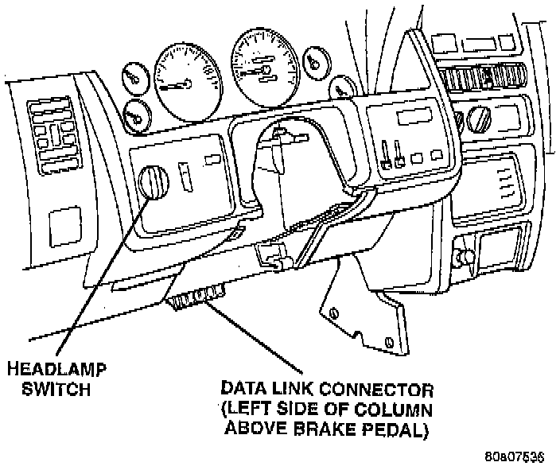

Accessing Trouble Codes

WITH CHECK ENGINE LIGHT
A stored Diagnostic Trouble Code (DTC) can be displayed by cycling the ignition key On-Off-On-Off-On within three seconds and observing the malfunction indicator lamp. This lamp is displayed on the instrument panel as the CHECK ENGINE lamp.
Examples:
^ If the lamp flashes 1 time, pauses and flashes 2 more times, a flashing DTC number 12 is indicated. If this code is observed, it is indicating that the battery has been disconnected within the last 50 key-on cycles. It could also indicate that battery voltage has been disconnected to the Powertrain Control Module (PCM). In either case, other DTC(s) may have been erased.
^ If the lamp flashes 1 time, pauses and flashes 7 more times, a flashing DTC number 17 is indicated.
After any stored DTC information has been observed, the display will end with a flashing DTC number 55. This will indicate the end of all stored information.

WITH DIAGNOSTIC READOUT BOX (DRB)
They can also be displayed through the use of the DRB scan tool. The DRB connects to the data link connector under instrument panel left of steering column.